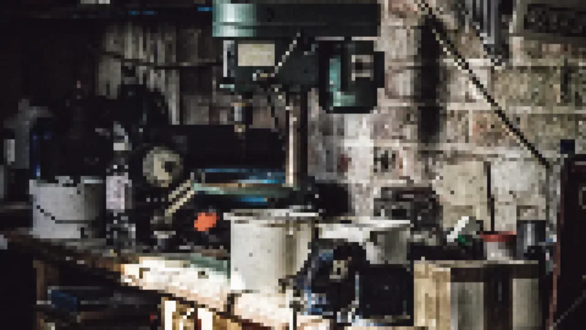
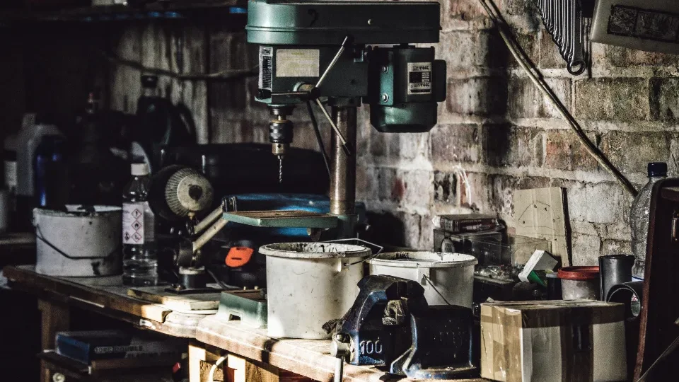

Work

Traverse the dynamic landscape of our portfolio, showcasing Shimti Multimedia’s groundbreaking projects in digital and print assets. Explore how we blend art and technology to create lasting impact—your inspiration for what’s possible starts here.
The workbench
Rather than describe what the studio can do, here it is, running. Every instrument below is operable — drag it, scrub it, switch it. Use the arrow keys if you would rather not use a pointer.
Upscaling
Drag the handle: the same frame, before and after enhancement.


Video editing
Native controls, so fullscreen, speed and captions all work. Pick a clip below.
Animation
Play it, or step through a frame at a time.
Colour grading
Same frame, four treatments.
Conversational AI
Ask it about the studio. It runs in your browser — no server, no model, no API.
Photography
Swipe, or use the arrows. The same component that runs the portrait gallery on About.
Music production
Original instrumentals, written and mixed here. Native controls, and it stops when you scroll away.
3D modelling
Drag to orbit, scroll to zoom. Arrow keys work too, and Home puts it back.
Logo design
Type a name. The mark is shown at three sizes at once, because one that only works large is not a mark.
App development
A working calculator. Click the keys or type — digits, operators, Enter and Escape all work.
Web design
Drag the width. The layout inside reflows the way a real one does — nothing is hidden, it rearranges.
Game development
Press Play, then jump with Space, Arrow Up, or a tap on the stage. There is no losing — hitting a block puts you back at the start.
Illustration
Drawn by hand, coloured digitally. Swipe, or use the arrows.
Social media
One picture, six platform crops. Click the square to set the focal point — every crop follows it.